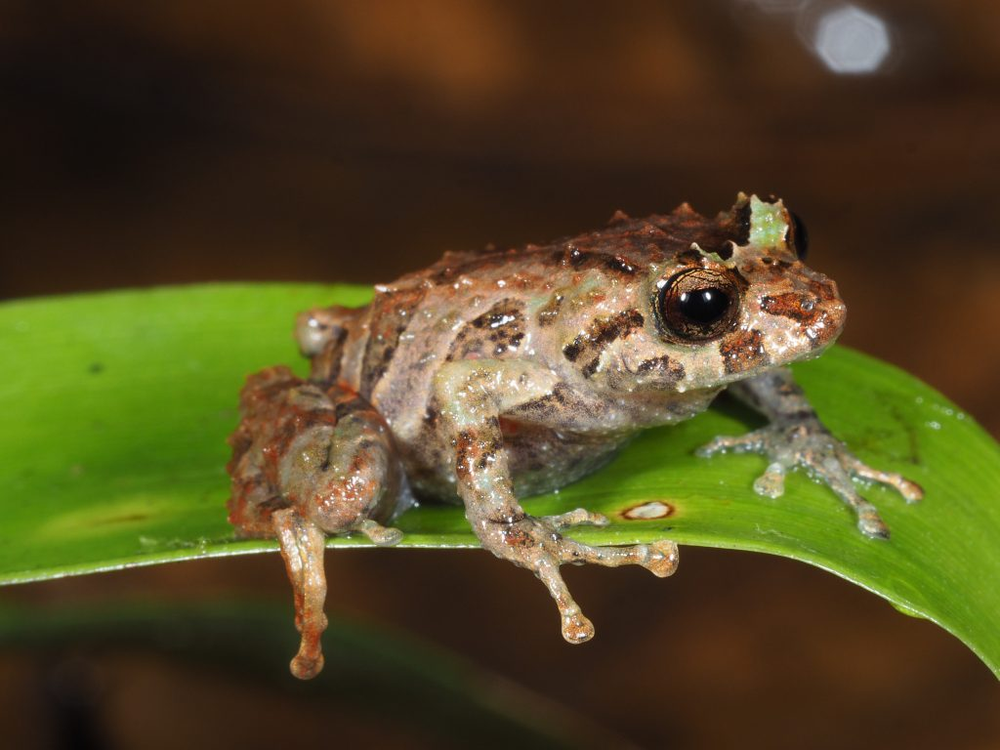
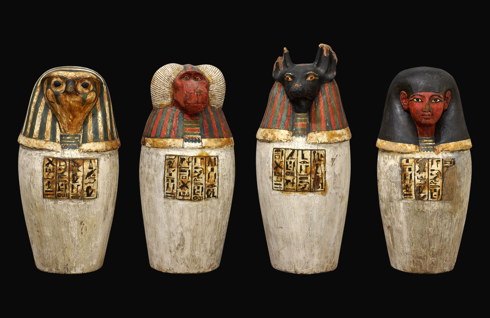

Scientists Discover New Species in the Amazon Rainforest

In a recent expedition to the Amazon rainforest, scientists have discovered a new species of
frog. The frog, named Hyloscirtus princecharlesi, was found deep in the heart of the rainforest,
highlighting the incredible biodiversity of the region.
The discovery of Hyloscirtus princecharlesi is significant because it represents a new branch in
the evolutionary tree of amphibians. The frog has a unique combination of physical
characteristics that distinguish it from other known species, including its distinctive call and
coloration.
Researchers believe that the discovery of Hyloscirtus princecharlesi underscores the importance
of preserving the Amazon rainforest and its delicate ecosystem. The region is home to thousands
of plant and animal species, many of which are found nowhere else on Earth.
The expedition that led to the discovery of Hyloscirtus princecharlesi was part of a larger
effort to document and study the biodiversity of the Amazon rainforest. Scientists hope that by
understanding more about the species that inhabit the region, they can better protect it from
deforestation and other threats.
Breakthrough in Cancer Research: New Treatment Shows Promise
Scientists have made a significant breakthrough in cancer research with the
development of a new treatment that shows promise in early clinical trials. The
treatment, known as OncoBlock, targets specific genetic mutations found in certain
types of cancer cells, effectively stopping their growth.
Early results from clinical trials of OncoBlock have been promising, with some
patients experiencing complete remission of their cancer. Researchers are hopeful
that this new treatment could revolutionize cancer care and improve outcomes for
patients around the world.
The development of OncoBlock is the result of years of research into the genetic
causes of cancer. By targeting specific mutations, researchers were able to develop
a treatment that is highly effective against certain types of cancer cells while
sparing healthy cells.
Historic Artifact Discovered in Egyptian Tomb

Archaeologists have made a stunning discovery in an Egyptian tomb, unearthing a
rare artifact that sheds new light on ancient Egyptian history. The artifact, a
golden amulet depicting the Pharaoh Akhenaten, is believed to be over 3,000 years
old.
The discovery of the golden amulet is significant because it provides new insights
into the reign of Akhenaten, a controversial pharaoh who is believed to have
introduced monotheism to ancient Egypt. The artifact is remarkably well-preserved,
with intricate details that offer clues about the art and culture of the time.
The tomb where the golden amulet was found is thought to belong to a high-ranking
official from Akhenaten's court. The discovery of such a well-preserved artifact in
the tomb suggests that it was a site of great importance during the reign of
Akhenaten.
World Leaders Gather for Climate Summit
World leaders from around the globe have gathered in New York City for a
historic climate summit. The summit, hosted by the United Nations, aims to address
the urgent need for action on climate change and to set ambitious targets for
reducing greenhouse gas emissions.
The summit comes at a critical time, as the effects of climate change are becoming
increasingly evident around the world. From rising sea levels to more frequent and
severe natural disasters, the impacts of climate change are being felt by
communities everywhere.
The goal of the climate summit is to build on the momentum of the Paris Agreement
and to accelerate efforts to reduce greenhouse gas emissions. Leaders are expected
to announce new commitments and initiatives to combat climate change and to protect
the planet for future generations.
SpaceX Successfully Launches Crewed Mission to Mars
SpaceX has achieved another milestone in space exploration with the successful
launch of a crewed mission to Mars. The mission, named Red Horizon, marks the first
time that humans have traveled to Mars, a feat that was once thought to be
impossible.
The crew of Red Horizon will spend several months on Mars, conducting scientific
research and exploring the planet's surface. The mission is a testament to the
vision and perseverance of SpaceX founder Elon Musk, who has long dreamed of making
Mars a viable destination for human exploration.
The success of the Red Horizon mission has sparked renewed interest in Mars
exploration among the public and the scientific community. Scientists hope that the
data gathered during the mission will help unlock the secrets of Mars' past and
provide valuable insights into the planet's potential for supporting life.